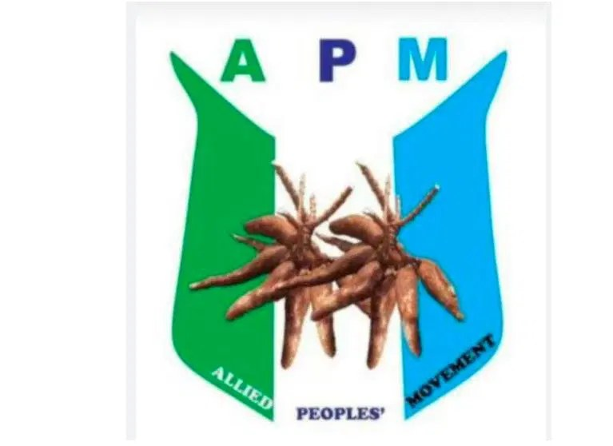

Lagos NDC meeting attack threatens democracy — APM candidate

Lagos State governorship candidate Prince Laja Adeoye of the Action Peoples Movement has condemned an attack on Nigeria Democratic Congress supporters at a town hall meeting in Ikeja, calling the disruption a threat to democracy. The meeting was held on Thursday at Classique Event Centre in Oregun.
Adeoye said disrupting the gathering infringed on citizens’ rights to assemble and express political views. He warned that attacks on opposition events could increase political tension ahead of the 2027 general elections. He also said the incident was especially concerning in Lagos, which he described as a traditional centre of political activity.
The APM candidate urged the Lagos State Police Command to identify, arrest and prosecute those responsible, regardless of their political affiliation or status. He cautioned that failing to hold perpetrators accountable could encourage similar incidents elsewhere. Adeoye also raised concerns about the safety of voters, candidates and journalists during the campaign period, citing reports that a journalist covering the meeting was attacked and had working equipment taken.
Adeoye commended NDC supporters for not retaliating and called on political leaders and parties to discourage violence and focus campaigns on issues. He urged INEC, security agencies and other stakeholders to work together to ensure fair conditions for all parties, and called on the National Peace Committee and civil society organisations to promote peaceful political engagement. He also sympathised with people reportedly injured in the attack and urged the NDC to continue its campaign. Adeoye said the APM remained committed to peaceful, credible and transparent elections and respect for the rule of law.
Source: Vanguard